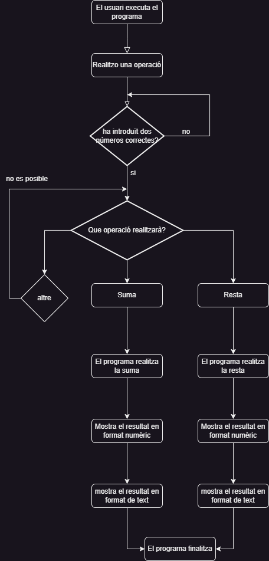
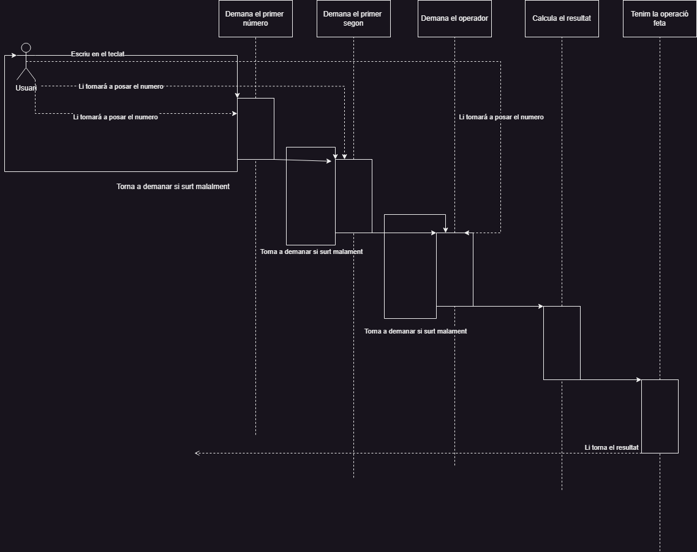
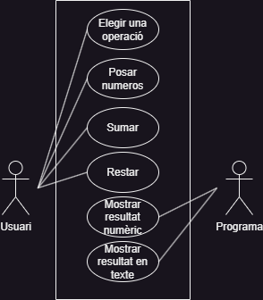

El nostre projecte está basat en un codi que varem fer en una practica de Programació, on farem calculs de números
ja sigui sumes o restes, on si a l'hora de sumar o restar hi ha que llevar ceros, es fará, pasarem aixó mateix
en una estructura de codi que ens han passat el professor on la modificarem perquè funcioni en un repositori
i desplega-ho en una pàgina web gràcies amb un servidor anomenat Tomcat on tindrem diverses pàgines desplegades o amb la
mateixa url on és pasará els valors i l'operador (sumar o restar) que volem fer l'operació, a part d'una conversió
de lletres i a la vegada la inversa.
En el primer nivell cobrirem totes les unitats de test on serán les nostres proves per poder cubrir
totes les cobertures o possibilitats que tenim en els tests, es a dir les limitacions dels números
introduïts en els parametres, els operadors que es poden calcular...
El segon nivell posarem a prova tests on agafarem els tests unitaris i fer "escenaris"
per veure com s'afecten l'hora de l'usuari o del servei de la pàgina web
El tercer nivell aquí simularem aquesta càrrega fent que el nostre codi es prepari
a escala d'usuari, no del servei de la pàgina web, és a dir veure si simulant el
tràfic que es dispara des del navegador.


